01 / Per chi
CTO, R&D manager, innovation lead, executive, responsabili prodotto e project manager coinvolti in digitalizzazione e re-ingegnerizzazione in aziende medtech, elettromedicali, pharma, biotech e healthtech.
TECH CONFERENCE //
Partner organizzatori
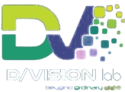
2027
Due aziende, una visione condivisa per il futuro del medtech
// Cos'è
Un pomeriggio di confronto tra industria, tecnologia e ricerca per chi guida progetti digitali complessi nel settore dei dispositivi medici. Una domanda concreta al centro: come costruire soluzioni digitali realmente integrate, scalabili e conformi nel medtech di oggi?
01 / Per chi
CTO, R&D manager, innovation lead, executive, responsabili prodotto e project manager coinvolti in digitalizzazione e re-ingegnerizzazione in aziende medtech, elettromedicali, pharma, biotech e healthtech.
02 / Di cosa si parla
AI nei flussi diagnostici clinici, re-ingegnerizzazione guidata dal rischio (debito tecnico, cybersecurity, compliance), e cosa distingue un fornitore da un partner strategico.
03 / Perché
Creare connessioni concrete tra aziende, ricerca e tecnologia per gestire la complessità dello sviluppo di soluzioni medicali.
// Edizioni
Dopo la prima edizione, MedTech Next torna nel 2027. Stiamo definendo data, location e programma: l'annuncio ufficiale arriverà a breve.
Progetti complessi, partner concreti
L'11 giugno 2026 il PoliHub di Milano ha ospitato la prima edizione di MedTech Next: un pomeriggio dedicato a chi guida progetti digitali complessi nei dispositivi medici, dall'AI integrata nei flussi diagnostici alla re-ingegnerizzazione dei dispositivi guidata dal rischio, con le voci di Politecnico di Milano, Confindustria Dispositivi Medici, BION Cluster Lombardo Scienze della Vita e aziende del settore.
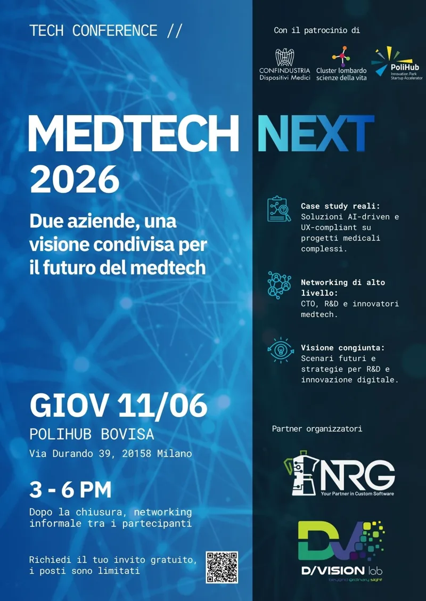


Un progetto nato dalla collaborazione tra tre aziende con competenze trasversali: imaging, intelligenza artificiale e dispositivi medicali. L'obiettivo: portare la diagnostica AI nel flusso clinico reale, superando silos tecnologici, sfide di integrazione e vincoli di usabilità. Il risultato? Una soluzione concreta, scalabile e già operativa.
Nel MedTech la sfida non è più solo progettare nuovi prodotti, ma mantenere vivi quelli esistenti in un contesto di continua evoluzione normativa, tecnologica e di cybersecurity. Un approccio di re-ingegnerizzazione del software guidata dal rischio, nato dall'esperienza diretta con manufacturer e partner industriali: analisi architetturale, gestione del debito tecnico e integrazione controllata di nuovi moduli, per trasformare la complessità in vantaggio competitivo.
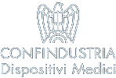
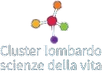
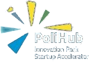
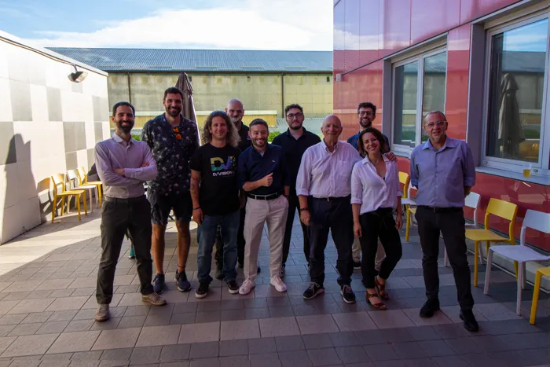
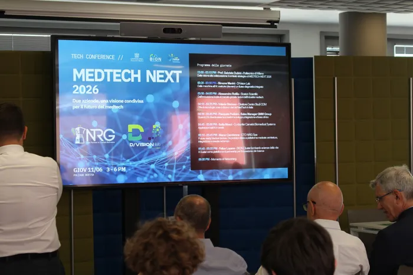
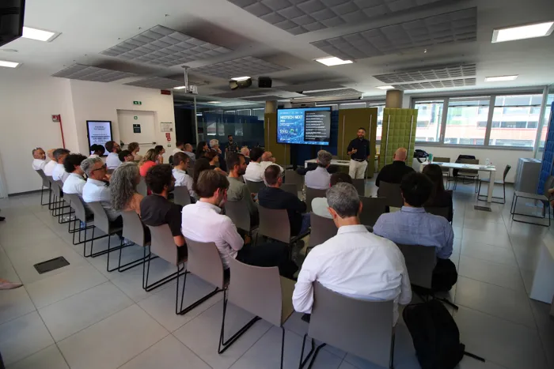
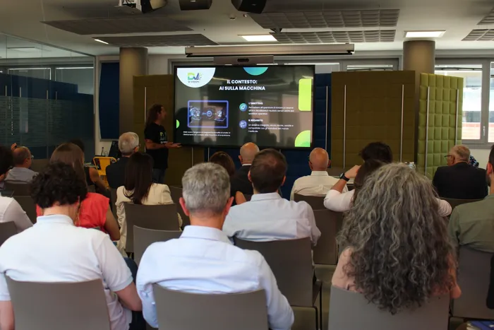
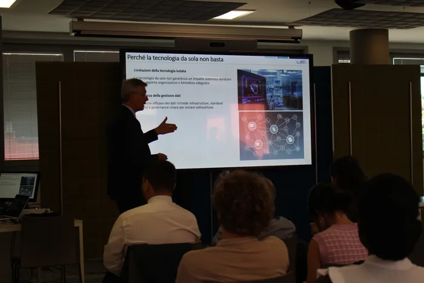
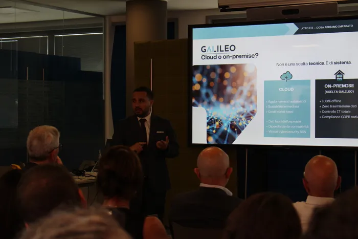
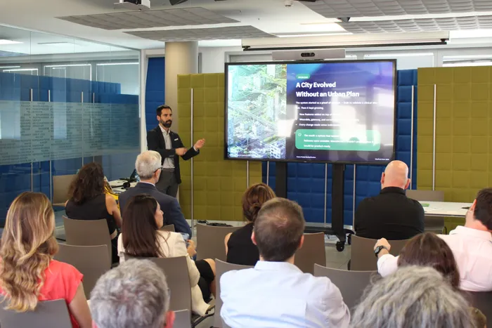
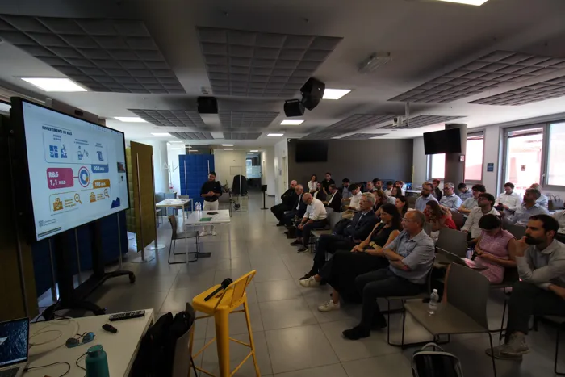
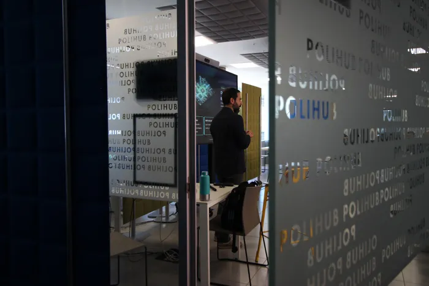
Foto: MedTech Next 2026, PoliHub Bovisa — Milano
// Sponsor
Sostieni MedTech Next 2027 e fatti conoscere da chi prende decisioni tecniche e di business nel settore medicale.
Tier 01
Tier 02
Tier 03
// Partner organizzatori
Software house specializzata in imaging medicale, visualizzazione e soluzioni software per il settore medtech.
dvisionlab.it →MedTech Engineering Partner: ingegneria per lo sviluppo di dispositivi e software medicali.
nrgsys.it →// Contatti
Scrivici per ricevere per primo data e programma di MedTech Next 2027, per proporti come speaker o per parlare di sponsorship.
info@dvisionlab.com